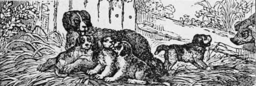
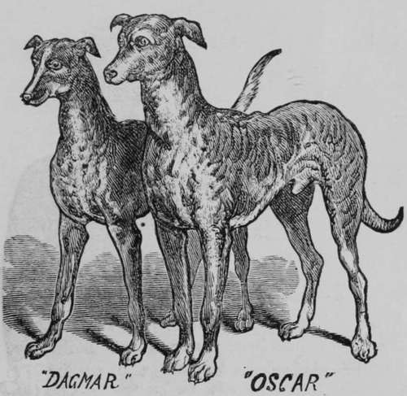

Hydrophobia-The Spitz
Description
This section is from the book "Breeding, Training, Management, Diseases Of Dogs", by Francis Butler. Also available from Amazon: Breeding, training, management, diseases.
Hydrophobia-The Spitz
This is the most important subject at present before the public, and is discussed pro and con by both the learned and unlearned. There are many deaths charged to the bite of the Spitz, who is accused of being a snappish dog, and over fond of using his teeth. But the Spitz has his friends, and will not be made a scape-goat-of for all the other dogs. Fortunately for him, most of the recent cases of hydrophobia have been caused by the bite of dogs of another species. His enemies retort, that this does not clear the Spitz from being the cause, as the cur may have been inoculated with the poison, by the bite of a Spitz.
Ex-Surgeon General of the Army, Dr. Wm. A. Hammond, who is regarded as one of the most eminent authorities on nervous diseases in this country, gives his views on hydrophobia, which is now conceded to be a nervous disease. The Doctor concurs in the dangerous nature of the Spitz dog, and considers theory of the harm-lessness of the Spitz absurd.
He says Spitz dogs are more prone to excite hydrophobia in the human system than any other breed of dogs he knows of, and pronounces the Spitz a cross between the Pommeranian hound and the Arctic fox. All hybrids are bad. While the blending of varieties is good, that of genera is accompanied with evil results. The disease can only be communicated by the saliva or by a wound, and not by the injection of the blood of the hydrophobic animal. The saliva is the only poisonous part of animals. The Saliva of the rattlesnake will kill you, and yet you can eat the rattlesnake.
Until more comprehensive investigation settles the question, we are justified in assuming from our present experience that the saliva of the Spitz dog is more uniformly poisonous than that of any other dog, and experience teaches that the saliva of a dog not suffering from rabies may be poisonous under certain conditions— when the dog is in a state of anger or fury or merely in a condition of excitement.
Dr. Hammond says the Spitz is absolutely of no use, and in a matter involving precious lives, it is better to be on the safe side. Nothing would be lost by exterminating the Spitz.
A dog perfectly healthy, says Dr. Hammond, or at least free from rabies, may produce the disease by his bite through his saliva. In the case of McCormick the dog was exhibited to the Neurological Society more than a month after the bite, and as hydrophobia runs its course in seven or eight days, and as the dog invariably dies, he either could not have had it or he could not have been the dog in question: remember, it takes a wound to produce death. You might swallow the saliva and it would not kill you unless you had, perhaps, an abrasion on your lip. The saliva is only poisonous when communicated through a wound. You get lockjaw, or tetanus, from a simple wound, and hydrophobia seems to be tetanus plus a group of other symptoms.
We can recognize the origin and symptoms of hydrophobia as we can those of scarlet fever or measles. To this day no one has discovered the primal origin of scarlet fever. We know that we cannot cure hydrophobia. Remember that there never has been a cure on record. It is necessary not to confound the prevention with the cure. There are a great many people who claim to have in vented cures for hydrophobia, but they mean cures after the bite and before the poison has been developed. This is an easy matter, but no cure has as yet been effected after the poison (which lies dormant in the system a few weeks, and sometimes even several months, and even several years) has been developed. In the early part of last fall a distinguished officer of the army came to me, who had been bitten by a dog, manifestly hydrophobic. I cauterized the wound with a red hot iron, and I regard him as perfectly safe.
Dr. Hammond seems to be well sustained in his assertion that there is no cure for hydrophobia after it has permeated the system, but prevention is tried with a great deal of faith Nevertheless in almost every case of hydrophobia that has occurred of late, the parts bitten bad been cauterized. But whether with hot iron, as Dr. Hammond recommends, or with caustic, we are unable to say. Any other preventative will be eagerly sought after by the public. Dr. Blaine, (formerly Blaine & Youatt, the celebrated Veterinary Surgeons,) recommended excising the wound. Immediate excision or cauterization was not considered absolutely necessary, although the sooner the bettor. Dr. Blaine also used an internal remedy, in which he had great faith, having administered it several hundred times, with less than a dozen failures of immunity. In all cases of failure, the bites were on the head.
Where a human life was at stake, he also cut out the bitten part, unless the patient strongly objected to the severe treatment Below will be found the formula for Dr. Blaine's preventative.
"Take of the fresh leaves of the Tree Box, 2 ounces, fresh leaves of Rue, 2 ounces, Sage half an ounce, chop finely, boil in pint of water till reduced to half a pint; strain and press out the liquor. Beat in a mortar, or otherwise thoroughly bruise, and boil in pint of new milk, to half a pint, which press out as before. Both fluids to be mixed, and divided into three doses, and taken, one every morning on a empty stomach. Double this quantity would be required for a horse; one third for a small dog, and half to two thirds for a large one, or other small animals. It is undoubtedly a hard dose to take and retain, and would never become "popular," unless there was unbounded faith that it was the only remedy against the dreaded and fatal disease.
Some years since, it was stated that steam hath was a remedy for hydrophobia, and had been used with success. But, like many other remedies, it was found not to be infallible. It is again recommended with great confidence, as an auxiliary in preventing and curing. Hydrophobia, it is said by some, is located in the stomach, and the treatment should be that which has a tendency to throw the foul matter from it. A course of Thomsonion treatment is recommended for this. No. 6 and skullcap, steeped in milk, and in cases where symptoms of hydrophobia are shown, and fluids can not be administered, enemas of lobelia and valerian are to be administered, which will cause the foul matter to be thrown from the stomach, relax the muscles and relieve from spasms. This treatment, with steam baths, must be followed for several weeks. For a week or two daily, and two or three times a week afterwards.
Only experience can prove the efficacy of this as a remedy. But, as the most skilled physicians make no pretensions to a remedy when once attacked, and only cauterization as a preventative, nothing is risked in resorting to this course of treatment possibly it may lead to happy results.
It is well to always avoid dogs or cats, which act strangely, or endeavor to conceal themself in dark or secluded corners. That is a sign of illness in almost every species of the brute creature. Guarding against bites of the Spitz and diseased dogs of all descriptions, is certainly the best preventative.
The Rev. Mr. Macdonna, "With His Dog " Mungo."
Queen Victorians Deer-Hounds
John Matthews's " Duke,"
Continue to:
- prev: Age Of Dogs
- Table of Contents
- next: The Great Bench Show